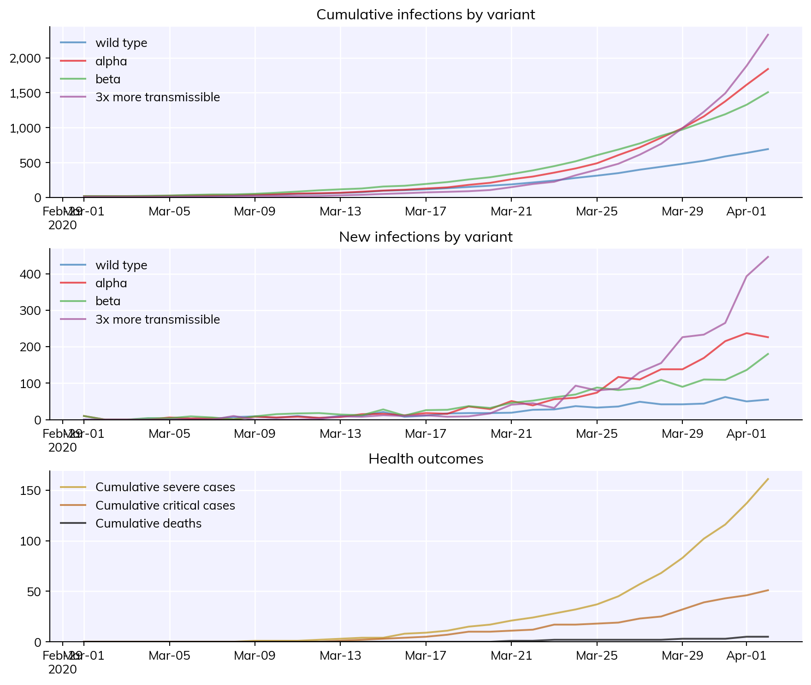
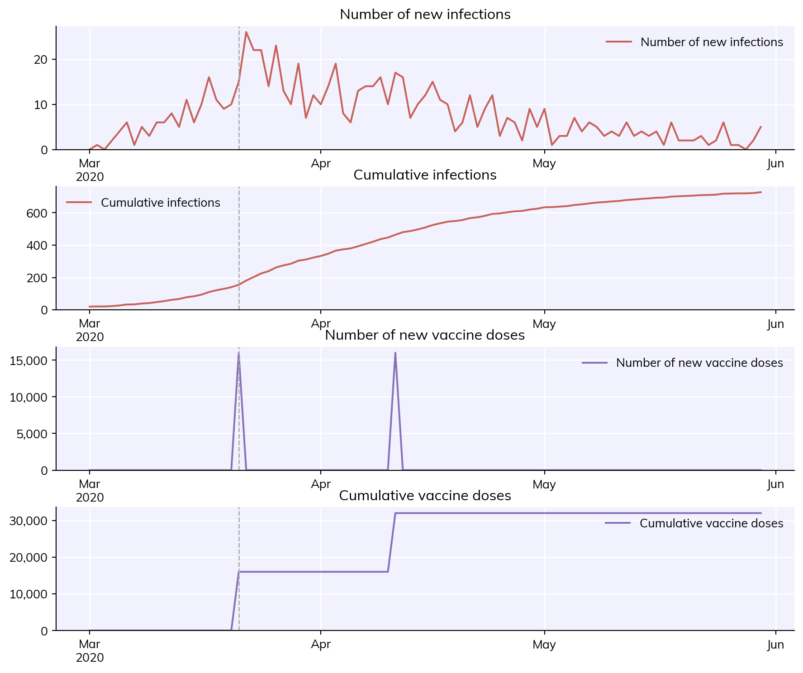
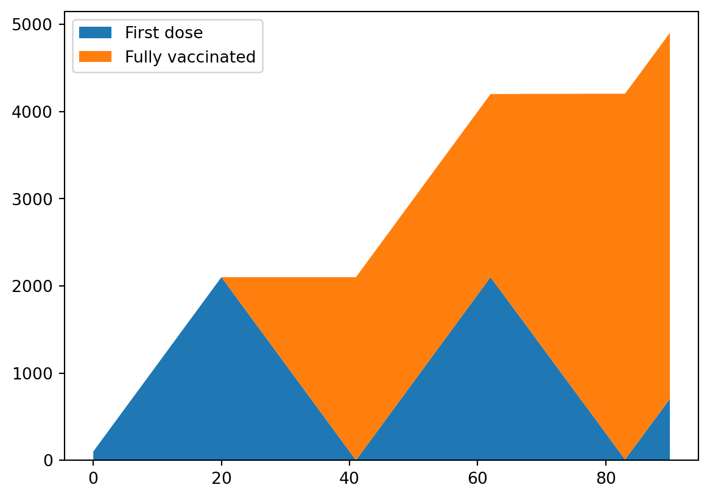
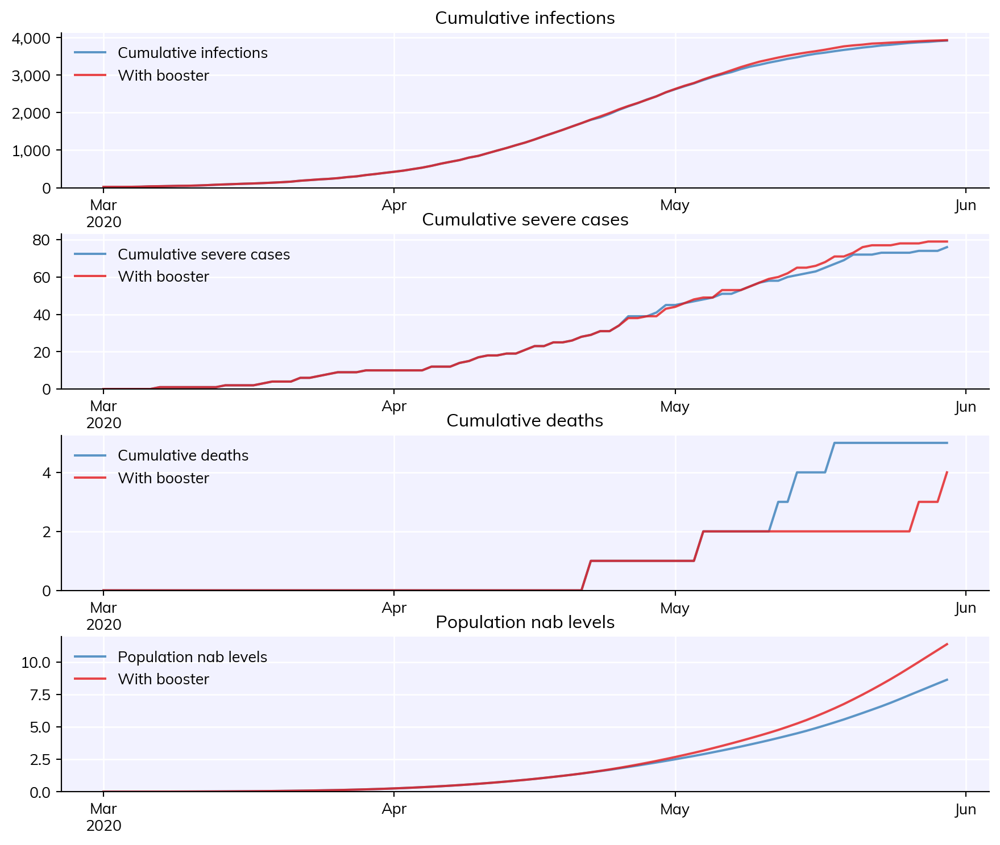
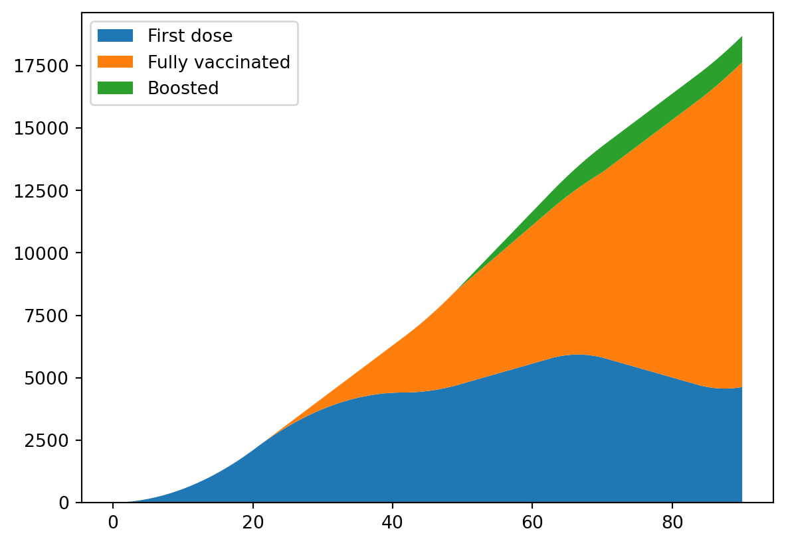

This tutorial covers several of the features new to Covasim 3.0, including waning immunity, multi-variant modelling, and advanced vaccination methods.
Click here to open an interactive version of this notebook.
Using waning immunity
By default, immunity is assumed to grow and then wane over time according to a two-part exponential decay of neutralizing antibodies. This can be changed by setting use_waning=False, such that infection is assumed to confer lifelong perfect immunity, meaning that people who have been infected cannot be infected again. When use_waning is set to True, agents in the simulation are assigned a peak level of neutralizing antibodies upon infection or vaccination, drawn from a distribution defined in the parameter dictionary. This level grows to its peak and then decays over time, leading to declines in the efficacy of protection against infection, symptoms, and severe symptoms. The following example creates simulations without waning immunity, and compares it to simulations with different speeds of immunity waning.
import numpy as npimport covasim as cvimport pylab as plcv.options(jupyter=True, verbose=0)# Create sims with and without waning immunitysim_nowaning = cv.Sim(n_days=120, use_waning=False, label='No waning immunity')sim_waning = cv.Sim(n_days=120, label='Waning immunity')# Now create an alternative sim with faster decay for neutralizing antibodiessim_fasterwaning = cv.Sim( label='Faster waning immunity', n_days=120, nab_decay=dict(form='nab_growth_decay', growth_time=21, decay_rate1=0.07, decay_time1=47, decay_rate2=0.02, decay_time2=106))# Create a multisim, run, and plot resultsmsim = cv.parallel(sim_nowaning, sim_waning, sim_fasterwaning)msim.plot()
The next examples show how to introduce new variants into a simulation. These can either be known variants of concern, or custom new variants. New variants may have differing levels of transmissibility, symptomaticity, severity, and mortality. When introducing new variants, use_waning must be set to True. The model includes known information about the levels of cross-immunity between different variants. Cross-immunity can also be manually adjusted.
# Define three new variants: B117, B1351, and a custom-defined variantalpha = cv.variant('alpha', days=0, n_imports=10)beta = cv.variant('beta', days=0, n_imports=10)custom = cv.variant(label='3x more transmissible', variant={'rel_beta': 3.0}, days=7, n_imports=10)# Create the simulationsim = cv.Sim(variants=[alpha, beta, custom], pop_infected=10, n_days=32)# Run and plotsim.run()sim.plot('variant')

Advanced vaccination methods
The intervention cv.BaseVaccination allows you to introduce a selection of known vaccines into the model, each of which is pre-populated with known parameters on their efficacy against different variants, their durations of protection, and the levels of protection that they afford against infection and disease progression. The prioritization of vaccines is implemented with derived classes that implement specific allocation algorithms. Covasim 3.0 comes with two such algorithms:
cv.vaccinate_prob() - specify a daily probability of vaccination for each person
cv.vaccinate_num() - specify a sequence of people to vaccinate, and the number of available doses each day
When using any of these vaccination interventions, use_waning must be set to True.
Probability-based vaccination
The intervention cv.vaccinate_prob() allows you specify the daily probability that each individual gets vaccinated. The following example illustrates how to use the cv.vaccinate_prob() intervention.
# Create some base parameterspars =dict( beta =0.015, n_days =90,)# Define probability based vaccinationpfizer = cv.vaccinate_prob(vaccine='pfizer', days=20, prob=0.8)# Create and run the simsim = cv.Sim(pars=pars, interventions=pfizer)sim.run()sim.plot(['new_infections', 'cum_infections', 'new_doses', 'cum_doses'])

Sequence-based vaccination
To use cv.vaccinate_num, it is necessary to specify the vaccine prioritization - for example, this may involve defining priority groups like 1A, 1B etc. depending on the setting. The vaccine prioritization is specified as an ordered sequence of people to vaccinate, so in almost all cases, a function can be defined that takes in a cv.People instance, and returns an array of indices specifying the order in which people get vaccinated. This function could also incorporate steps such as randomizing the order of people within priority groups, or removing some people from the sequence to account for vaccine hesitancy and peak coverage not reaching 100%. A simple example of a prioritization function would be to simply sort by age in descending order i.e.
Note: Because age prioritization is so commonly used, you can use the shortcut sequence='age' rather than specify this function.
This function can be passed to cv.vaccinate_num where it will be evaluated during initialization, and therefore will run after the population has been generated. In cases where the cv.People have been generated offline and are being loaded instead of generated, it’s possible to pass a pre-computed sequence of indices to cv.vaccinate_num rather than a prioritization function that returns the sequence.
The example below also shows how to use a simple Analyzer to capture additional information about the vaccine state each timestep.
# Record the number of doses each person has received each day so# that we can plot the rollout in this example. Without a custom # analyzer, only the total number of doses will be recordedn_doses = []# Define sequence based vaccinationpfizer = cv.vaccinate_num(vaccine='pfizer', sequence=prioritize_by_age, num_doses=100)sim = cv.Sim( pars=pars, interventions=pfizer, analyzers=lambda sim: n_doses.append(sim.people.doses.copy()))sim.run()pl.figure()n_doses = np.array(n_doses) # n_doses is an array with shape of [n_days x num_agents] fully_vaccinated = (n_doses ==2).sum(axis=1) # this line calculates how many we agents had 2 doses on a given dayfirst_dose = (n_doses ==1).sum(axis=1) # this line calculates how many we agents had 1 dose on a given daypl.stackplot(sim.tvec, first_dose, fully_vaccinated)pl.legend(['First dose', 'Fully vaccinated'])

Notice how second doses are prioritized, so after 21 days, there is a backlog of people requiring second doses, so the first doses are suspended until all of the second doses have been delivered. In reality, the pace of vaccination typically increases following the commencement of vaccination, so capacity increases over time. The num_doses argument allows this increase to be captured. There are several ways to specify a time-varying number of doses, including a date-based dictionary to facilitate calibration when the number of doses each day is known. A simple option is to use a function that returns the number of doses to distribute based on the cv.Sim - for example:
This function corresponds to the vaccination rate increasing linearly for the first 50 days, before then stabilizing. The function can be passed directly into the cv.vaccinate_num intervention:
Now the increase in capacity means that when second doses are due, there are sufficient additional doses available to continue distributing first doses. Further customization, particularly to customize second dose prioritization depending on the specific policies implemented in a particular setting, can be readily achieved by implementing a new class deriving from cv.BaseVaccination in exactly the same way cv.vaccinate_prob and cv.vaccinate_num are implemented.
Boosters
By default, the vaccination interventions in Covasim are targeted towards unvaccinated people. If you want to include boosters in your simulation, you can use the booster=True argument when calling cv.vaccinate. You also need to use the subtarget argument so that we know who is going to receive a booster shot:
# Define the number of boostersdef num_boosters(sim):if sim.t <50: # None over the first 50 daysreturn0else:return50# Then 100/day thereafter# Only give boosters to people who have had 2 dosesbooster_target = {'inds': lambda sim: cv.true(sim.people.doses !=2), 'vals': 0}booster = cv.vaccinate_num(vaccine='pfizer', sequence=prioritize_by_age, subtarget=booster_target, booster=True, num_doses=num_boosters)# Track dosesn_doses = []n_doses_boosters = []# Create a sim with boosterssim_booster = cv.Sim( pars = pars, interventions = [pfizer, booster], label ='With booster', analyzers =lambda sim: n_doses_boosters.append(sim.people.doses.copy()))sim_booster.run()# Plot the sims with and without boosters togethercv.MultiSim([sim, sim_booster]).plot(['cum_infections', 'cum_severe', 'cum_deaths','pop_nabs'])# Plot doses againpl.figure()n_doses = np.array(n_doses_boosters)fully_vaccinated = (n_doses ==2).sum(axis=1)first_dose = (n_doses ==1).sum(axis=1)boosted = (n_doses >2).sum(axis=1)pl.stackplot(sim.tvec, first_dose, fully_vaccinated, boosted)pl.legend(['First dose', 'Fully vaccinated', 'Boosted'], loc='upper left');


In this example there isn’t a large difference in the epidemic dynamics, because over a short run-time (120 days) immunity doesn’t wane very much, so boosters don’t have a large effect. However, this example can be adapted to longer run-times, where boosters have a larger impact.
Prior immunity methods
The longer that the COVID-19 pandemic persists, the less feasible/desirable it becomes to simulate the entire ~2 year history of the epidemic. However, starting simulations 1-2 years into the pandemic is also not ideal, as this will fail to capture the pre-existing immunity profile of the population. A good alternative is to use the cv.prior_immunity method. The following example starts a simulation in which 50% of the population are assumed to be vaccinated with the Pfizer vaccine 360 days before the simulation begins:
The histogram of neutralizing antibody levels after 1 day of simulation shows that there are already significant levels of immunity in the population.
This next example will initialize the population with immunity levels corresponding to a prior wave of infections peaking 120 days before the simulation starts, with 5% of the population having been infected: